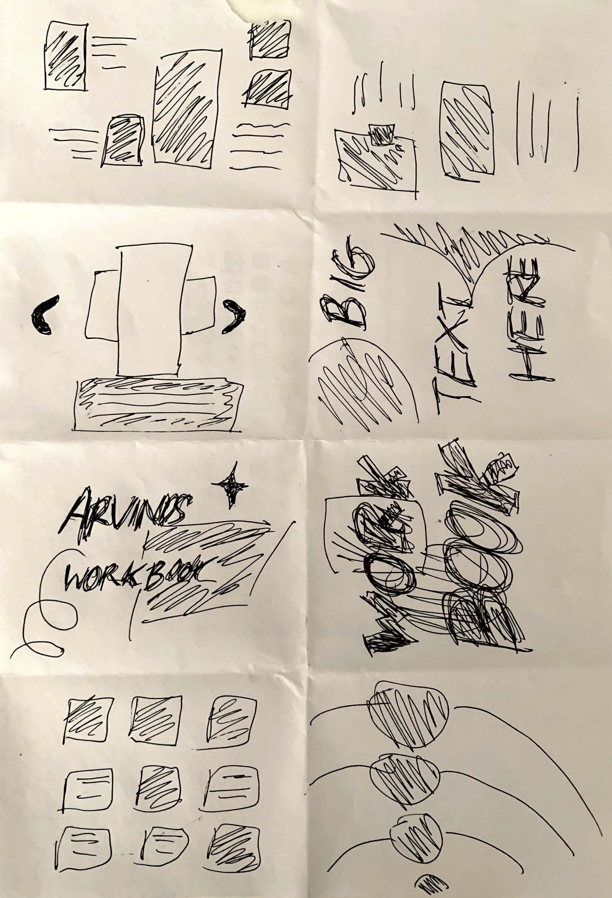

CRAZY 8s EXERCISE

The Crazy 8s exercise is a brainstorming technique used to generate ideas quickly and creatively, especially in design and problem-solving contexts. Here's a brief summary of how it works:
- Preparation: Participants take a sheet of paper and fold it into eight sections, each section representing one idea.
- Time Limit: Typically, each participant is given a set amount of time, usually around 5 minutes, to sketch or write down an idea in each of the eight sections.
- Ideation: Participants brainstorm and sketch their ideas rapidly, focusing on quantity rather than quality. The goal is to generate a diverse range of ideas within the time constraint.
- Sharing: Once the time is up, participants share their ideas with the group, discussing and elaborating on each concept.
- Reflection: After the Crazy 8s session, participants can review the ideas generated, identify promising concepts, and further develop them through discussion or additional iterations of the exercise.
Overall, the Crazy 8s exercise encourages creativity, fosters collaboration, and helps teams explore a variety of solutions to a problem in a short amount of time.
PAPER PROTOTYPE
DEVELOPMENT


In Week 2 I began building the home page for my website based on a space theme. The theme was chosen from the last idea of my Crazy 8s Exercise and was expanded upon in a paper prototype for the layout of the home page.
Developments include:
- Experimenting with tiled gif backgrounds
- Playing around with the opacity of the planets
- Making the planets black and translucent
- Applying a coloured gradient to the text of the planets
- Animating an effect to display the planets' colour on hover
- Experimenting with coloured gradients in the nav bar